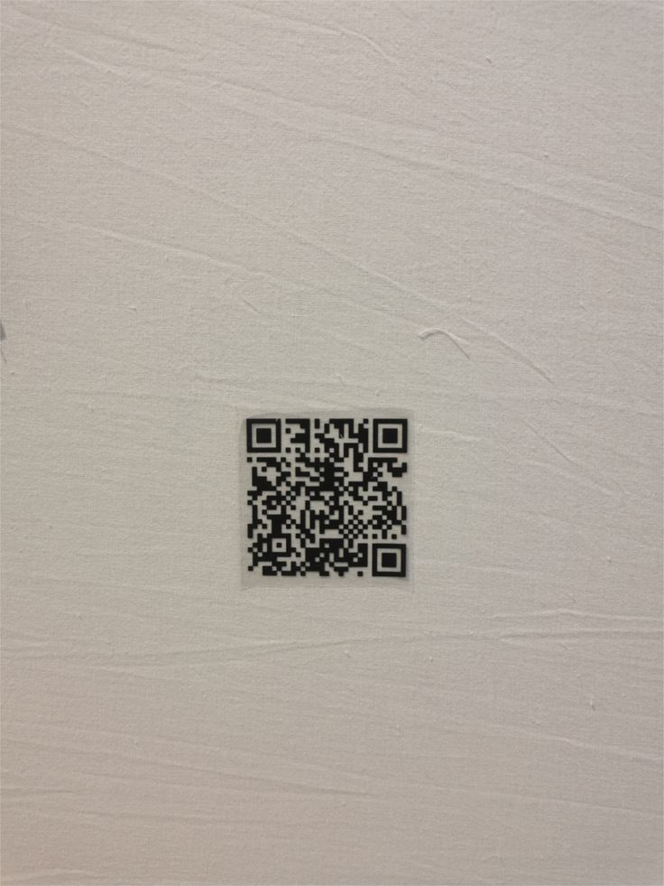

Archive of Encoded Information
05 Systems

1994 / Japan / DENSO / Masahiro Hara
Patterns for Machines. A two-dimensional barcode that encodes information through patterns of black and white squares, allowing machines to read data through optical scanning.
Developed in 1994 by Masahiro Hara and his team at DENSO in Japan, QR codes were originally designed to track automotive parts. Unlike traditional barcodes, QR codes could store more information and be scanned quickly from multiple directions.
QR codes organize binary data into black and white square modules. Three large finder patterns help scanners detect their position and orientation. Error correction allows information to be recovered even when part of the code is damaged.